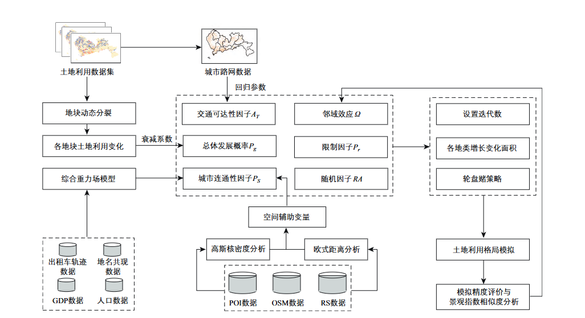
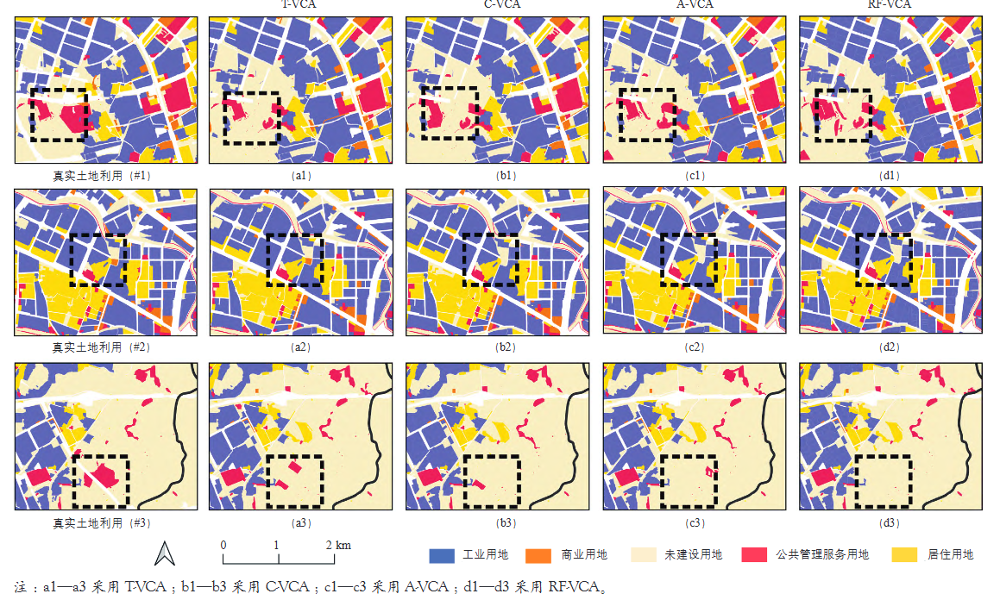
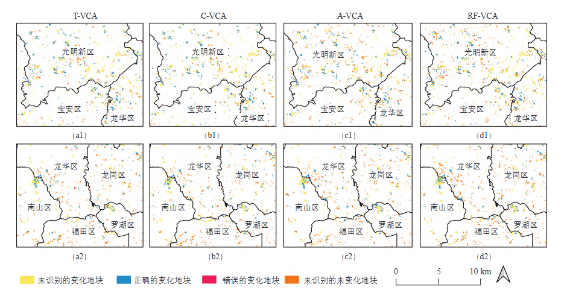

Simulation of Urban Land-use Change at Micro Land Parcel Scale Driven by Traffic: A Case Study of Shenzhen
* Corresponding author.
国际城市规划 (Urban Planning International) · 2022 · Vol. 37, No. 6 · pp. 17–25
城市交通作为土地利用空间格局变化的重要驱动因素，在城市发展模拟研究中值得重视。本文提出一套基于矢量元胞自动机考虑交通因素的城市土地利用变化模拟框架（T-VCA）。该框架综合交通流、信息流、经济流等数据量化城市连通性因子，基于路网数据有效量化交通可达性因子，将其引入矢量元胞自动机模型，能够有效模拟微观地块尺度下的城市土地利用变化。以深圳市为研究区，本研究所提出的T-VCA模型模拟精度最高（FoM=0.266），相较于最新的基于随机森林的矢量元胞自动机（RF-VCA）模型模拟精度提高了11.05%，景观指数相似度高达96.00%，表明考虑交通因素可以有效提高城市发展模拟精度。T-VCA模型较仅考虑城市连通性的矢量元胞自动机（C-VCA）模型和仅考虑交通可达性的矢量元胞自动机（A-VCA）模型精度分别提高2.67%和3.75%，表明城市连通性因素适用于挖掘新兴城区和远郊区的土地利用转化规则，而城市交通可达性因素适用于挖掘发展成熟的中心城区的土地利用转化规则。本研究可为城市规划人员在城市交通和土地利用管理方面提供参考。
Urban traffic significantly influences urban spatial structure and land use patterns. This paper proposes T-VCA, a traffic-informed vector-based cellular automata framework for urban land-use change simulation at the micro land-parcel scale. The framework integrates multi-source traffic flow, information flow, and economic flow data to quantify urban connectivity, and uses road network data to quantify traffic accessibility. Taking Shenzhen as the study area, the T-VCA model achieves the highest accuracy (FoM = 0.266), which is 11.05% higher than the latest RF-VCA model, with landscape index similarity up to 96.00%. Compared with C-VCA (connectivity only) and A-VCA (accessibility only), T-VCA improves accuracy by 2.67% and 3.75%, respectively. Urban connectivity is suitable for mining land-use conversion rules in emerging urban areas and distant suburbs, while traffic accessibility applies to mature central urban areas. This study provides references for urban planners in transportation and land use management.
城市交通深刻影响着城市的空间结构和土地利用格局，土地利用变化与交通系统之间存在复杂的双向互馈关系。交通网络的扩张通过改变可达性来引导城市发展方向，在城市模拟中交通因素的作用机制研究尤为重要。元胞自动机（CA）作为一种自下而上的空间模拟方法已被广泛应用，矢量元胞自动机（VCA）以不规则地理实体为基本单元，能在微观地块尺度上实现更高精度的模拟。然而，当前VCA模型中的交通因素通常被简化为"到最近道路的距离"等单一空间变量，未能充分刻画交通流动态特征及区域间空间交互强度。
本研究针对这一不足，提出综合考虑多源交通因素驱动城市土地利用演变的理论框架和模拟方法（T-VCA），力图回答以下关键科学问题：(1) 如何有效量化城市交通中的连通性与可达性特征并将其融入VCA框架？(2) 不同类型的交通因素在不同城市化阶段与区域中扮演何种差异化角色？
T-VCA框架包含三大核心模块：(1) 数据预处理与变量构建——对多源数据进行空间配准与标准化处理，构建城市发展驱动力特征变量集；(2) 交通因子量化——从城市连通性和交通可达性两个维度刻画交通因素对土地利用变化的驱动机制；(3) 矢量元胞自动机模拟——将交通因子作为核心驱动变量嵌入基于随机森林的土地利用转换概率估算模型，结合邻域效应、约束条件和轮盘赌机制执行迭代模拟。
城市连通性采用改进的重力模型量化地块间的空间交互强度，同时引入加权度中心性指标衡量每个地块在交通网络中的综合连通水平。交通可达性基于路网最短路径时间距离，计算每个地块单元到不同等级交通设施（地铁站、公交站、高速出入口等）的时间距离。为验证交通因子的有效性，本研究设计了四组对比模型：RF-VCA（基准，不含交通因子）、C-VCA（仅引入城市连通性）、A-VCA（仅引入交通可达性）和T-VCA（同时引入两类因子）。模拟时段为2014年至2020年，采用FoM、OA、Kappa及多项景观格局指数进行综合精度评估。

深圳市（22°24′–22°52′N，113°43′–114°38′E）地处广东省南部、珠江口东岸，全市总面积约1 997 km²，下辖10个行政区。自1980年设立经济特区以来，深圳市经历了快速城市化进程，建成区面积由约3 km²扩张至超过900 km²，地铁运营里程超过500 km，是中国城市交通系统与土地利用互动演化的典型研究区。本研究采用多源地理空间数据，包括2014年和2020年土地利用矢量数据（居住、工业、公共管理与服务、商业服务业四类）、基于OSM路网的10万+不规则地块单元、出租车OD轨迹及公交地铁客流等交通流数据、POI与人口GDP等社会经济数据，以及四级道路网络数据。
T-VCA模型在所有评估指标中表现最优，品质因子（FoM）达到0.266，相较于RF-VCA（FoM = 0.240）精度提高了11.05%。C-VCA（FoM = 0.259，+7.92%）和A-VCA（FoM = 0.256，+6.67%）的改善验证了两类交通因子的独立贡献。在景观格局相似度方面，T-VCA模型在斑块密度、最大斑块指数、景观形状指数、平均欧氏最近邻距离和聚集指数五项指标中，平均相似度高达96.00%，表明交通因素不仅提升了像元级模拟精度，也有效还原了宏观尺度的城市景观格局特征。

分区域分析揭示了交通因子在不同城市化阶段与区域中的差异化驱动机制。在新兴城区和远郊区（宝安、龙岗、坪山、光明），C-VCA表现优于A-VCA——城市连通性因子有效捕捉了由交通流交互带动的建设用地增长趋势。在中心城区（福田、罗湖、南山），A-VCA表现更佳——交通可达性因子准确反映了由公共交通引导的填充式发展模式。T-VCA通过同时引入两类因子，在各区域均保持最优表现，表明连通性与可达性在城市发展模拟中具有互补效应。

在不同城市用地类型上，C-VCA在居住用地模拟中表现更优——得益于其有效捕捉了新兴城区住宅开发随交通流网络延伸的空间规律；A-VCA在公共管理与服务用地模拟中精度更高——受益于其精准反映了中心城区公共设施布局对公共交通可达性的高度依赖。T-VCA综合了两者的优势，在居住、工业、公共管理与服务、商业服务业四种用地类型上均取得最优或接近最优的模拟效果。
随着可达性搜索半径从500 m逐步扩大，模型精度呈现多"波峰"特征：在500–1 000 m范围内，可达性因子主要捕捉地铁站点周边TOD导向的高密度开发模式，形成第一个精度波峰；当作用范围延伸至2 000–3 000 m时，模型识别到城市副中心周边由快速路网引导的组团式发展模式，形成第二个波峰。然而，受距离衰减效应和交通因子边际效用的影响，整体模拟精度随作用范围扩大呈递减趋势。
本研究最重要的发现是揭示了城市连通性与交通可达性两类交通因子在城市发展不同阶段的差异化驱动机制。城市连通性因子适用于挖掘新兴城区和远郊区的土地利用转化规则——该类区域城市化尚不充分，土地利用变化更多受跨区域交通流交互的宏观引导。交通可达性因子适用于挖掘发展成熟的中心城区的土地利用转化规则——该类区域基础设施完善，城市发展以存量更新和填充式开发为主，对局部可达性变化更为敏感。这一发现为城市规划者在交通与土地利用协同管理方面提供了差异化策略依据。
T-VCA模型的核心优势在于同时整合了城市连通性和交通可达性两类交通因子。连通性因子关注城市作为"流空间"节点的交互强度，反映城市对外联系的水平；可达性因子关注城市内部的交通设施空间配置，反映城市内部空间效率。两者的互补机制使得T-VCA能够在城市发展的不同阶段、不同区位实现精准模拟，这一框架设计思路对相关模型研究具有参考价值。
本研究存在以下不足：仅以特定年份静态的交通路网空间分布进行模拟，未能引入交通规划政策和未来路网发展的动态变化；此外，未来研究将考虑预测城市土地利用变化并引入置信区间量化土地利用转化概率，以提高模型的可靠性和实用性。
@article{yao2022jiaotong,
title={交通驱动下微观地块尺度的城市土地利用变化模拟——以深圳市为例},
author={Yao, Yao and Li, Linlong and Sun, Zhenhui and
Kou, Shihao and Cheng, Tao and Guan, Qingfeng},
journal={国际城市规划 (Urban Planning International)},
volume={37},
number={6},
pages={17--25},
year={2022},
doi={10.19830/j.upi.2022.421},
issn={1673-9493}
}